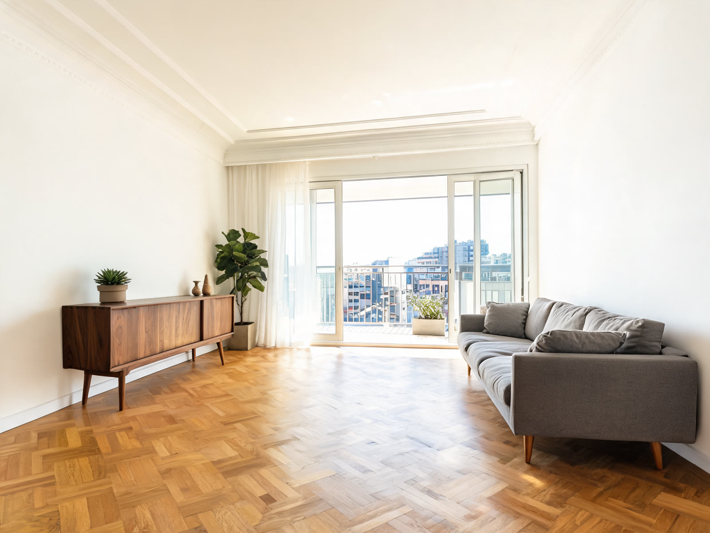
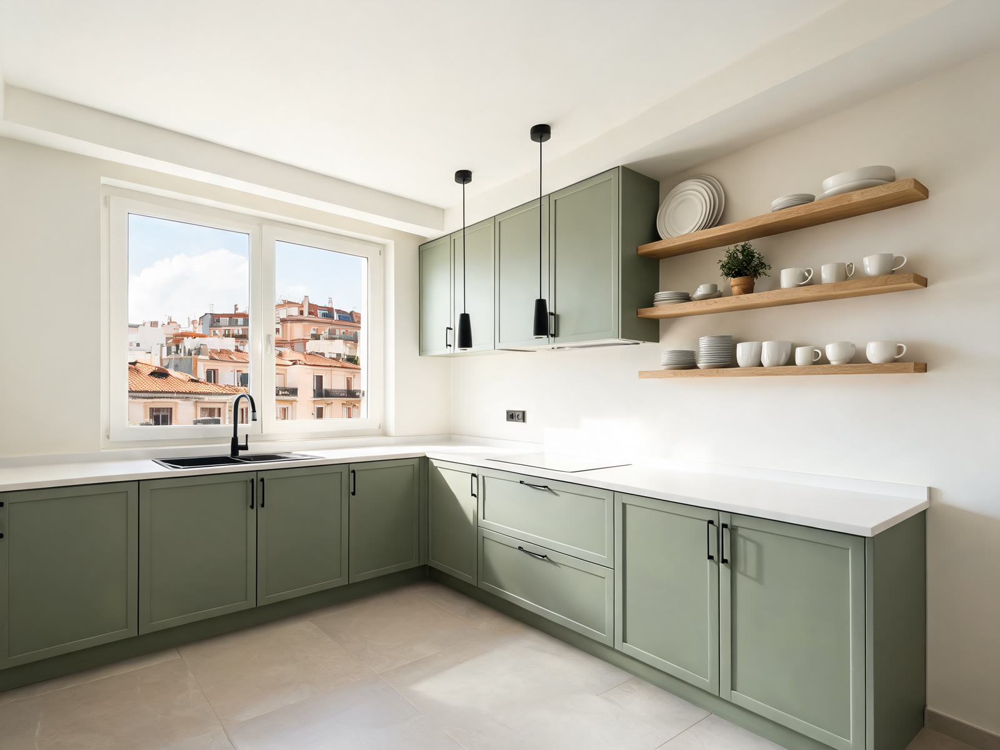
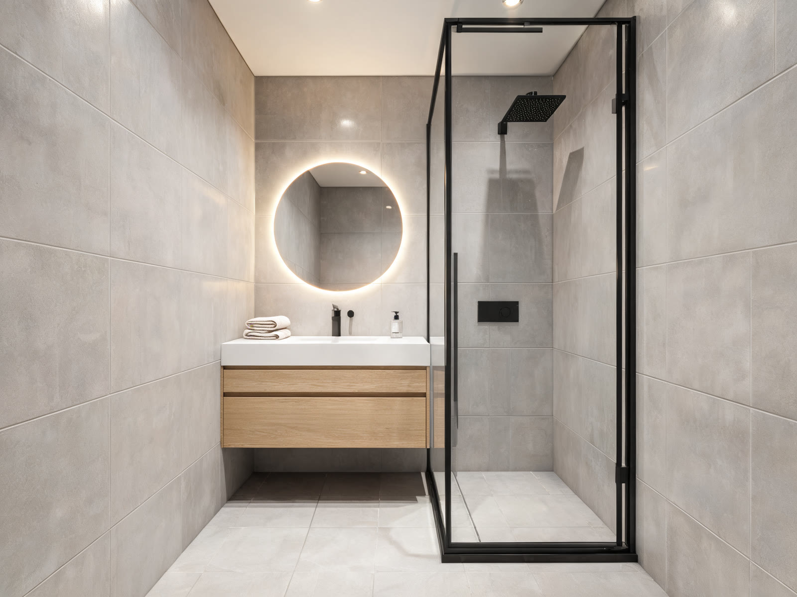
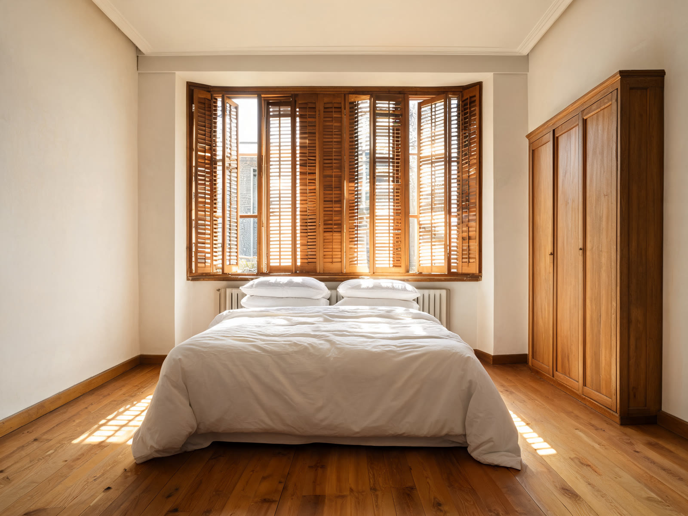
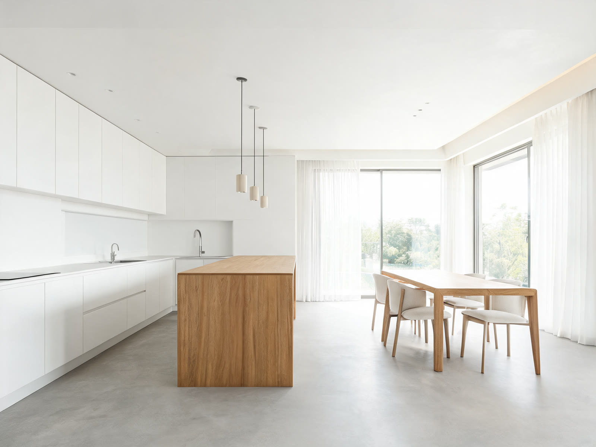
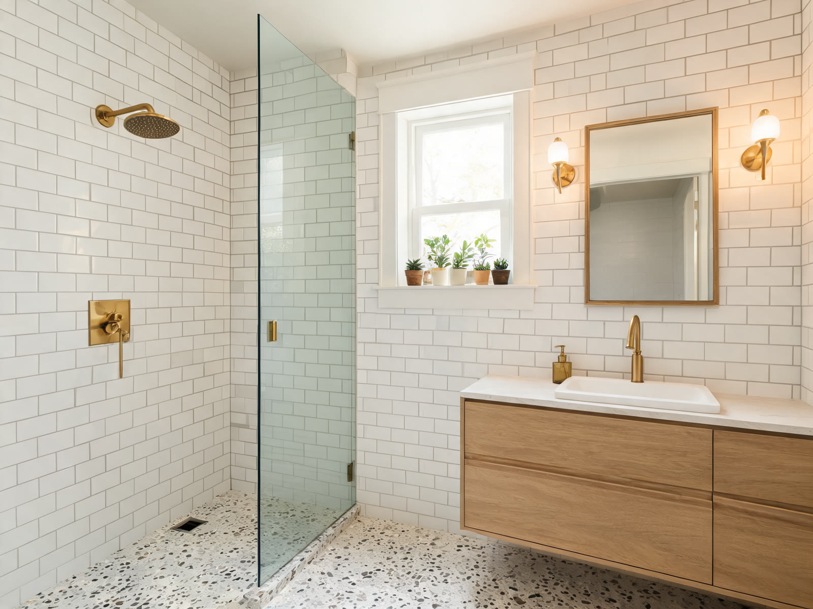

Ideas de acabado para pisos del centro de Bilbao
Propuestas de acabado para pisos del Ensanche y del centro: suelos bien nivelados, alicatados a plomo, instalaciones nuevas escondidas donde deben ir y remates limpios. Lo que se ve, y lo que no se ve.






Estas imágenes son de referencia, creadas para mostrar estilos de acabado: no son fotos de obras terminadas. Cuando entreguemos obras, las publicaremos aquí con su antes y su después.
Y mientras se hace, la ves desde el móvil
Fotos cada semana y en cada avance, las fases en orden y lo imprevisto con su precio para que lo apruebes tú. Míralo en cuarenta y cinco segundos.
¿Te gusta alguna de estas ideas?
Vamos, lo medimos y te damos el presupuesto cerrado partida por partida. Sin compromiso.